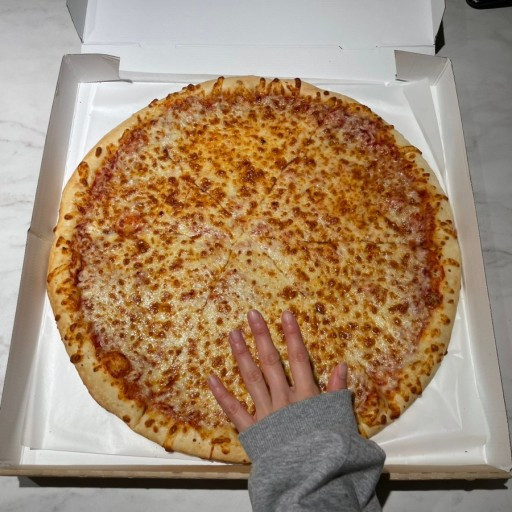

1학년 축구 1짱반, 우승팀 1학년 5반의 자랑 이한림(자타공인)
↖↖↖↖그림 중간에 어떻게 넣나요 ?
그는 누구인가
이한림
2007년 11월 16일 출생
이한림의 학교생활
2014년 죽림초등학교 입학
1학기 선거 낙선, 2학기 선거 낙선
2015년 제석초등학교 전학
1학기 선거 낙선, 2학기 선거 부반장
2016년 전하초등학교 전학
1학기 선거 낙선, 2학기 미출마
1학기 선거 부반장, 2학기 미출마
2018년 호계초등학교 전학
1학기 선거 낙선, 2학기 부회장
2019년 은월초등학교 전학
1학기 선거 부회장, 2학기 미출마
2020년 호계중학교 입학
1학기 선거 낙선, 2학기 선거 낙선
1학기 선거 낙선
2021년 고헌중학교 전학
2학기 미출마
전교회장 당선 ㄷㄷ (박수타이밍입니다.)
2023년 디미고 입학
1학기 선거 미출마
아 햄버거 먹고싶다.

코스트코 치즈 피자 vs 불고기 피자 vs 페페로니 피자 .. 당신의 선택은 ?
>>>멋있는 나를 볼 수 있는 곳<<<<